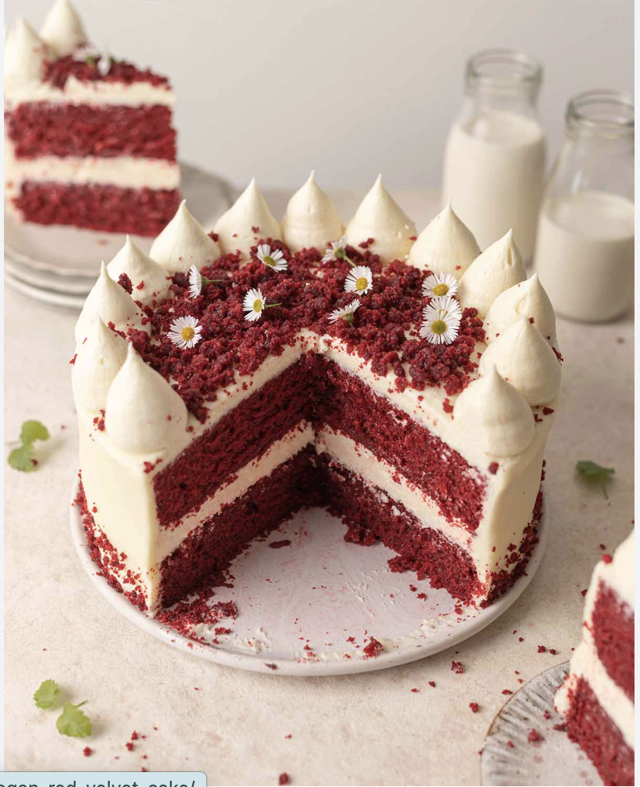

The first recipe is a true classic—and one that’s as beautiful as it is delicious! Red velvet cake is soft, tender, and perfectly balanced, with a light cocoa flavor and a subtle tang that makes every bite rich without being too heavy. Paired with a smooth, creamy frosting, it creates a melt-in-your-mouth experience that feels both comforting and special. There’s something unforgettable about red velvet cake, from its vibrant color to its delicate, velvety texture. It’s perfect for celebrations or simply when you want to bake something a little extra special. Give it a try and enjoy every soft, flavorful bite—hope you love this red velvet cake as much as I do!

Butter. I use salted butter, but unsalted butter would also be great. I just recommend tasting the dough to ensure that it’s salted to your liking. Eggs. if you’d like to find great egg substitutions that still make perfect cookies – see my eggless chocolate chip cookies recipe. White Sugar. You can use granulated white sugar or organic cane sugar. Brown sugar. I use light brown sugar in this recipe for the best results. Flour. I recommend using an unbleached, all-purpose flour to make these chocolate chip cookies. Many readers have used gluten-free all-purpose flour with excellent results. Or, try these gluten-free chocolate chip cookies. Sea Salt. I exclusively bake and cook with pure, fine sea salt. Sea salt is different than table salt (that is iodized), so if you use salt other than sea salt I recommend testing the recipe first with 1/2 tsp and then adjusting to your taste. Chocolate Chips. As you can see from the photos, sometimes I use chocolate chunks, chopped chocolate, or chocolate chips. It doesn’t matter what you use, as long as you use 2 cups.